У тех, кто впервые увидел коленный стул, скорей всего в голове промелькнули слова: что за …..? как же на нем сидеть? Впрочем, нечто подобное подумал и я, но прежде чем выкинуть из головы данное изобретение с пометкой бред, все же решил подробнее разузнать что же это такое.
Как оказывается, данное изобретение не такое уж нелепое, и если верить производителям, то ортопедический коленный стул позволяет держать осанку во время работы за столом. Вы спросите, "существуют же всевозможные ортопедические стулья стандартной конструкции, в чем преимущество коленного стула"?
Дело в том, что не зависимо от того, какой вы используете стул (стандартной конструкции), вы сможете держать осанку, только облокотившись на спинку стула. Но как только оторветесь от спинки, для большинства, спину держать ровно уже не получается. Вследствие чего получаем искривление позвоночника, особенно этому подвержены подростки и люди, которые много работают за компьютером.
Так в чем же преимущество коленного стула? Как оказывается все очень просто, чем больше угол наклона сидения, тем ровнее держит спину человек. А связанно это с центром тяжести позвоночника, поскольку при сидении на наклонной поверхности человек непроизвольно держит спину ровно, поскольку это более комфортно, а вот сутулиться даже при желании уже не получится.
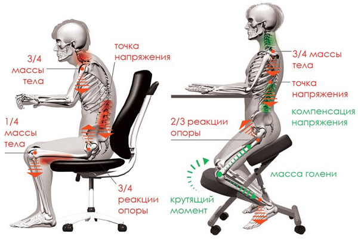
Не смотря на то, что конструкция коленного стула весьма проста, цены на него довольно таки впечатляют. Но при желании коленный стул можно изготовить своими руками, используя деревянные бруски или профильную металлическую трубу.
Размеры брусков, которые понадобятся при изготовлении коленного стула, указаны на чертеже (для увеличения кликните по картинке).
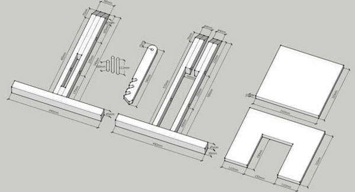
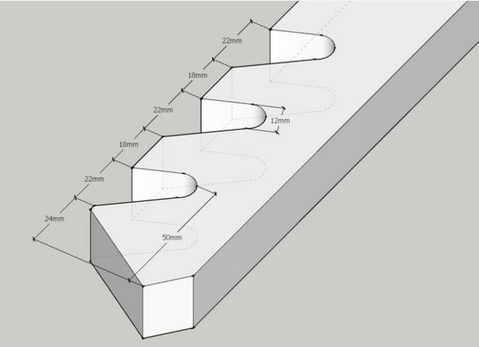
Чертежи в более большом разрешении прикреплены к этой записи.
3D модель будущего коленного стула выглядит так:
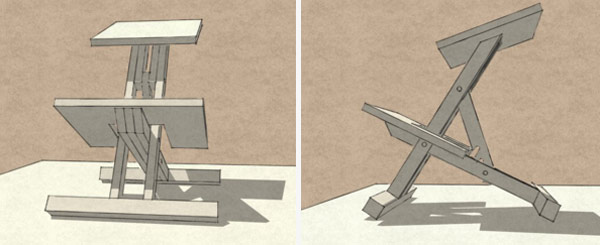
А теперь перейдем от теории к практике. Согласно чертежу нам необходимо подготовить деревянные бруски. Дерево нужно использовать без сучков, и желательно твердых пород дерева.
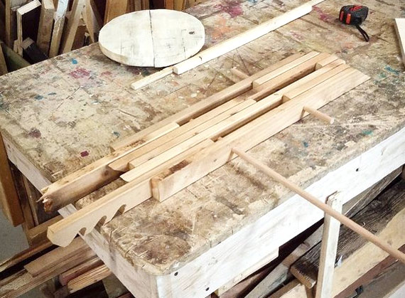
Если вы не хотите, чтобы через месяц стул начал скрипеть, то для соединения брусьев используйте мебельные шканты и столярный клей.
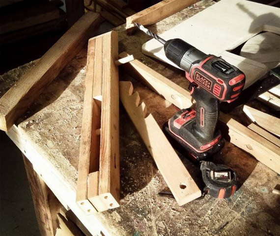
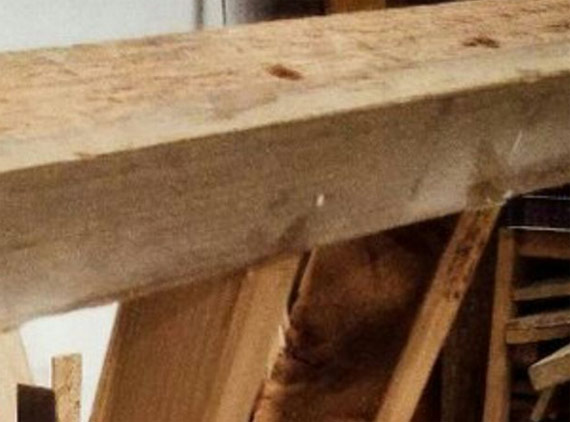
Процедура изготовления стула немного затянется, за счет длительного высыхания клея. Для надежности, дополнительно, соединения можно скрепить саморезами или конфирматами.
Сидение и подставку под колени вырезаем из фанеры толщиной 20мм. И крепим при помощи конфирматов и мебельных шкантов к раме стула.
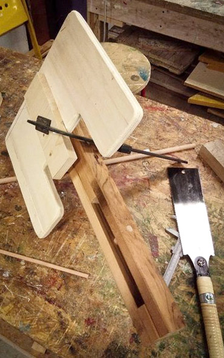
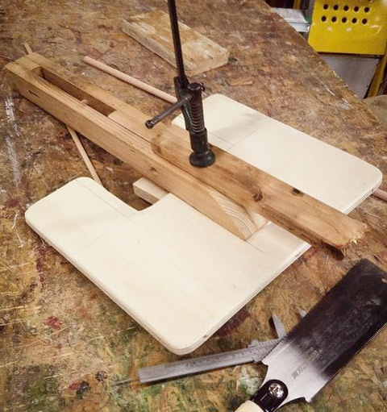
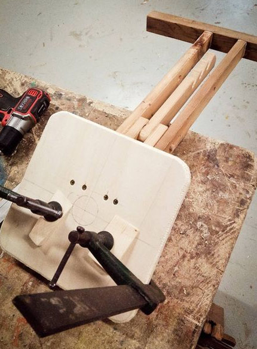
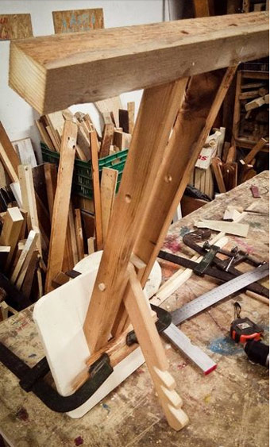
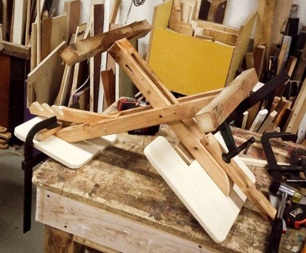
Разумеется, без мягкой обивки на таком стуле будет сидеть совсем не комфортно, поэтому фанеру необходимо будет оббить поролоном.
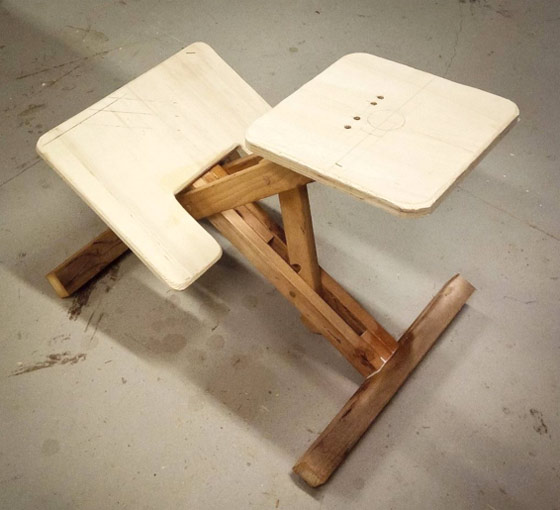
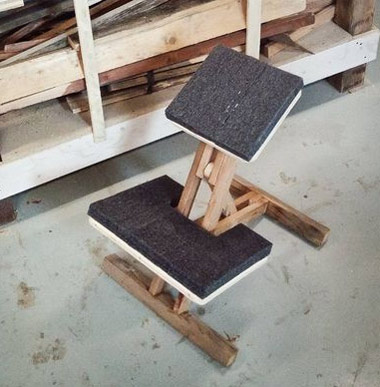
Желательно использовать несколько видов поролона, внизу жесткий, а сверху более мягкий. Это делается для того, чтобы колени не продавили мягкий поролон и не уперлись в жесткую фанеру.
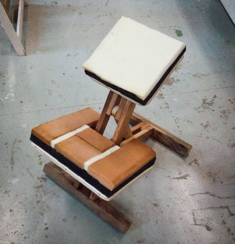
Поролон обтягиваем эластичной декоративной тканью.
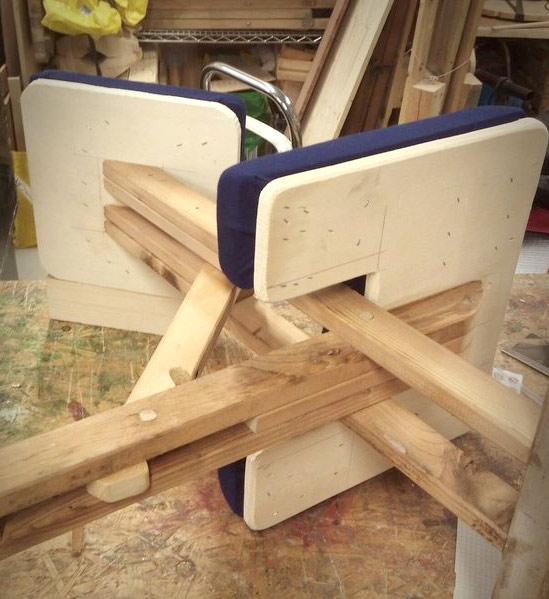
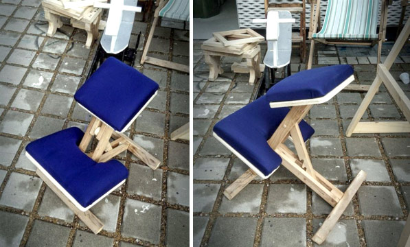
Для удобства перемещения, к основанию стула крепим колесики.
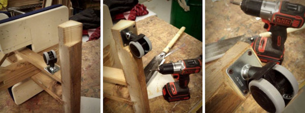
Поскольку в основании стула используем квадратный брус, а в разложенном состоянии стул стоит на ребрах, то для крепления колес необходимо в нижнем брусе сделать выборку. Чтобы колеса были установлены строго вертикально, стул в разложенном состоянии устанавливаем на пол. Сбоку прикладываем линейку (брусок толщиной 15-20мм), и с торца основания стула, карандашом отмечаем, где именно делать выборку для колес.
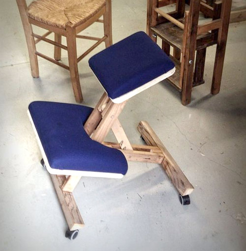
Коленный стул готов к использованию
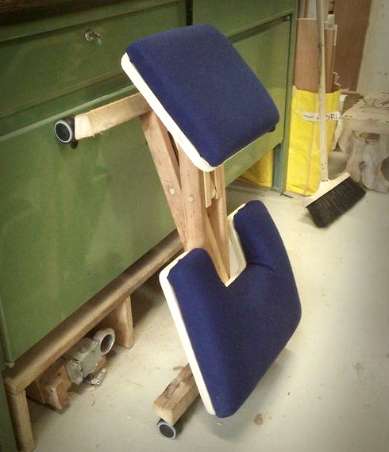
В сложенном состоянии он занимает не много места, и его вполне можно хранить в кладовке.
Добавлено 28.09.2016г
Некоторые рекомендации, которыми поделился один из наших читателей (Игорь zhillig@gmail.com), при строительстве данного стула.
Не имея мастерской, вынужден был мастерить в условиях квартиры. Инструмент есть, но кое-чего сильно не хватало. Особенно стойки для сверла или сверлильного станка, ибо точное перпендикулярное плоскостям деталей сверление - весьма важно в принципе, а в этом стуле так особенно, ибо под сиденьем надо сверлить более 100 мм, и кривизна недопустима.
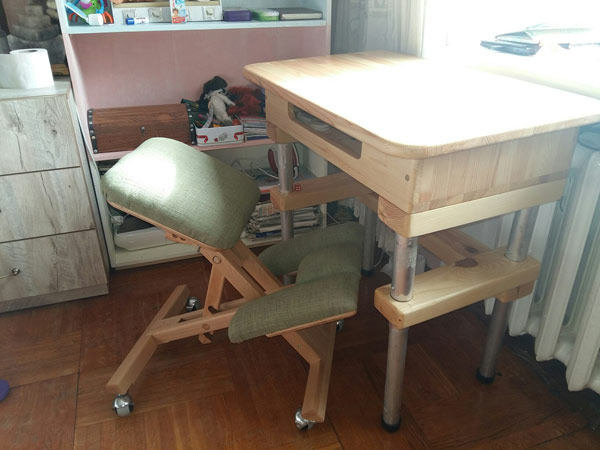
Укажу важные моменты по технологии.
1. Сверловка дрелью. Я сверлил с двух сторон, используя кондуктор. Можно сверлить и на глаз, но обязательно с двух сторон и очень тщательно следя за углом, стараясь выдерживать максимально возможно прямой угол.
2. Регулировочную планку лучше делать из толстой фанеры. 20-ти миллиметровой или склеить несколько кусков более тонкой фанеры, при отсутствии толстой.
3. Прирезку под колеса сделал по уровню.
Теперь о доработках.
1. После обивки подколенников, сразу пришла мысль, что сделать три прямоугольных подушечки будет куда как проще
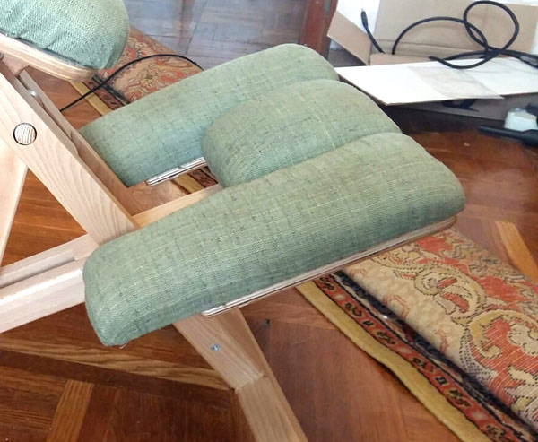
2. Врезал планки в опорные бруски на 20 мм, плюс клей и конфирматы. На первом стуле из сосны пришлось поставить уголки, ибо дочка все же умудрилась как-то расшатать клей.
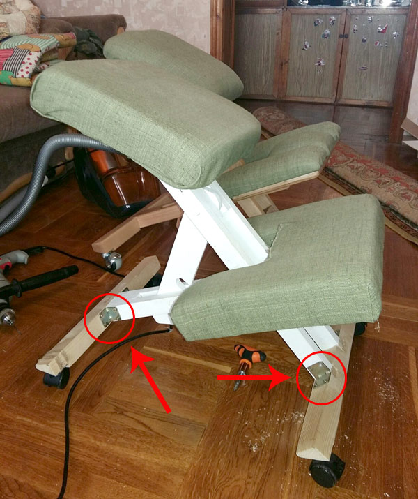
3. Усилил у опорного бруска ту часть, что идет от сидения. То есть там у меня не 2 планки, а 5. И также врезаны в брус на 20 мм.
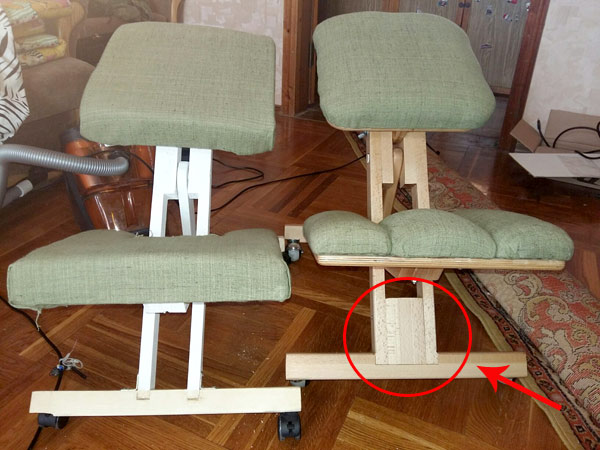
4. Сделал сиденье и подколенники составными. Есть опорная деталь, и есть само сидение и подколенники уже с поролоном и обтянутые. Для соединения в сиденье и подколенники вставил болты м8 (можно и м6), шляпки которых залил эпоксидкой (можно жидкими гвоздями или иным надежным клеем с наполнителем).
5. Система регулирования угла наклона сидения. Уже испытал и доволен. Стул стал чуть выше прежнего, и пришлось для дочки менять высоту посредством планки. Так легко выставил комфортный угол, чего нельзя было сделать в базовой модели. Можно дополнить систему еще рядом отверстий по другому радиусу и тем самым получить почти идеально плавную регулировку наклона сидения.
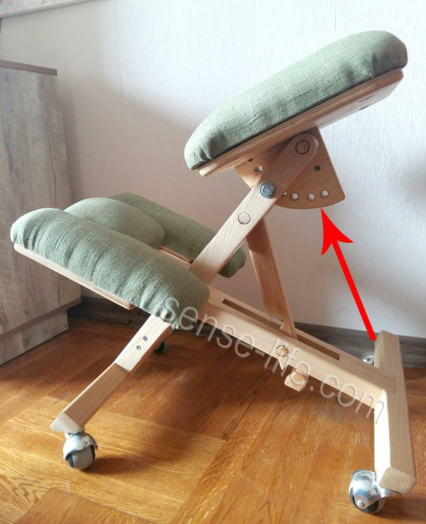
Ну и просто поделюсь тем, где я нашел бук. У кого есть такие доски, тому проще, но в своём регионе я не нашел их. А нашел в большом магазине буковые ступени и тут же в магазине мне распустили одну метровую (1000*400*40, кажись) ступень на рейки 40*22 и несколько брусков 40*45 и я радостный поехал домой делать стул №2. А теперь хочу сделать стул №3, сделав детали не сборными, а сплошными.
Дочка пошла в первый класс и я вижу, что посадка ребенка на таком стуле реально иная, чем на традиционном. У ребенка прямая спина без всяких усилий. Для взрослого человека, ИМХО, надо делать стул из железа. Я (100 кг) аккуратно садился и на первый стул из сосны, но всё же есть сомнения, что он меня долго выдержал бы.
И еще... дочке больше нравится первый стул... ??